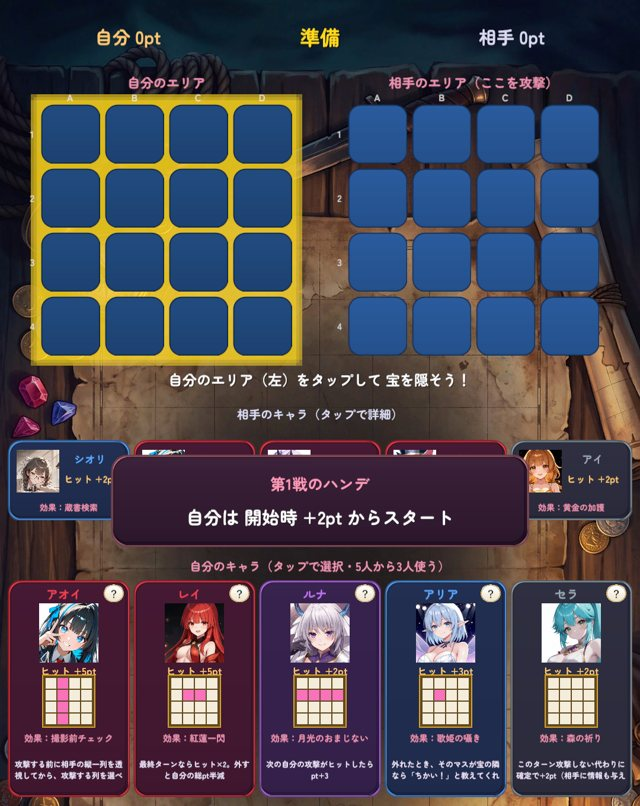

ぶろっくぶれいかー 美少女ブロック崩し
PR※1位は当サイト運営元（Kerino Game）が開発したゲームの紹介（PR）です
ブロックを壊すほどイラストが開放される、スマホでは珍しい「脱衣ブロック崩し」。25人以上のキャラは全員フルボイス。集めたイラストはギャラリーでいつでも見返せて、きせかえは動画つきでホーム画面で揺れます。
えっちの方向は「服を着ているのに布が少ない」系。裸エプロン・バニー・水着・包帯・サスペンダーなど、Google Playの年齢区分の中でできるギリギリを狙ったイラストが揃っています。18禁ではありませんが、Google Playで配信中のゲームの中では最上位クラスの露出度です。
ゲーム部分は本気のブロック崩しで、ボスの攻撃をかわしながら奥義を撃つテンポの良さが売り。エンドレスモードやミニゲーム（ポーカー・トレジャーバトル）もあり、1プレイ3分から遊べます。
ミニゲームも遊べる
強気なレイと5カードドローで勝負。勝つほど連勝ボーナスが雪だるま式に増え、連勝の節目ではここでしか手に入らないきせかえがもらえます。使うのはゲーム内のオーブだけで、現金は賭けません。

4×4のマスに隠した宝を、キャラ3人の能力で先に探し当てる頭脳戦。キャラごとに攻撃範囲と効果が違い、編成と読み合いで勝ちます。ステージを突破すると限定きせかえやイラストが手に入ります。
- 向いている人：周回が面倒／えっちな絵をたくさん集めたい／ボイスで癒されたい
- 注意点：インストール直後は解放済みのイラストが少ないので、まずチュートリアルの10連ガチャでSSRを引くのがおすすめ